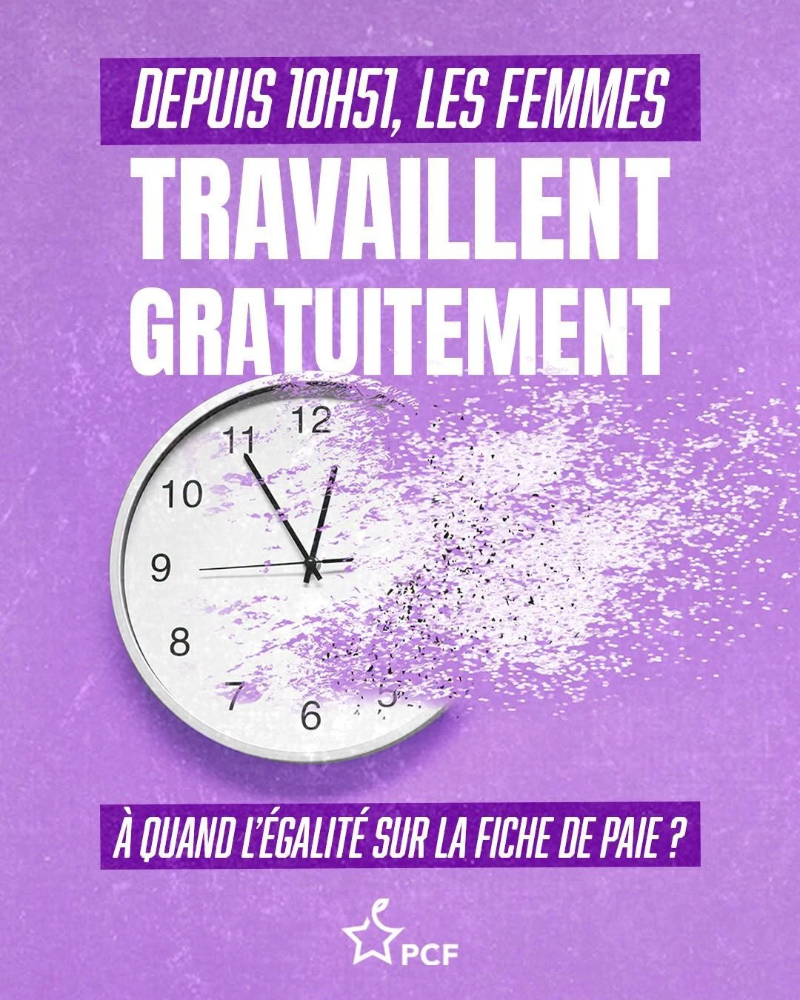

Partage du PCF national
À travail de valeur égale, salaire égal
Date indiquée par Facebook · 19 novembre 2026
Repères éditoriaux
À travail de valeur égale, salaire égal. Nous exigeons que cette règle soit appliquée, avec des sanctions pour les entreprises qui la bafouent, des hausses de salaire dans les métiers très féminisés et la fin du temps partiel imposé.
Eurostat mesure pour 2024 un écart de 11,8 % entre les rémunérations horaires brutes moyennes des femmes et des hommes en France. La série couvre l’industrie, la construction et les services, hors administrations publiques, défense et Sécurité sociale obligatoire.
Publication originale du PCF national
📢 À travail de valeur égale, salaire égal. La loi l’exige depuis 1972. Faisons-la respecter !
En France, les femmes gagnent en moyenne 11,8 % de moins par heure que les hommes. C’est comme si, depuis ce 19 novembre à 10 h 51, elles travaillaient gratuitement jusqu’à la fin de l’année.
🚩 Le PCF exige des sanctions financières plus lourdes pour les entreprises qui enfreignent la loi.
Nous voulons aussi augmenter les salaires dans les métiers majoritairement exercés par des femmes et mettre fin au temps partiel imposé.

Sources
PCF national · publication relayée par le PCF 79 · fil Facebook · FB-1474504514862797
À lire aussi · Le PCF place la paix au cœur de son appel au 1er mai